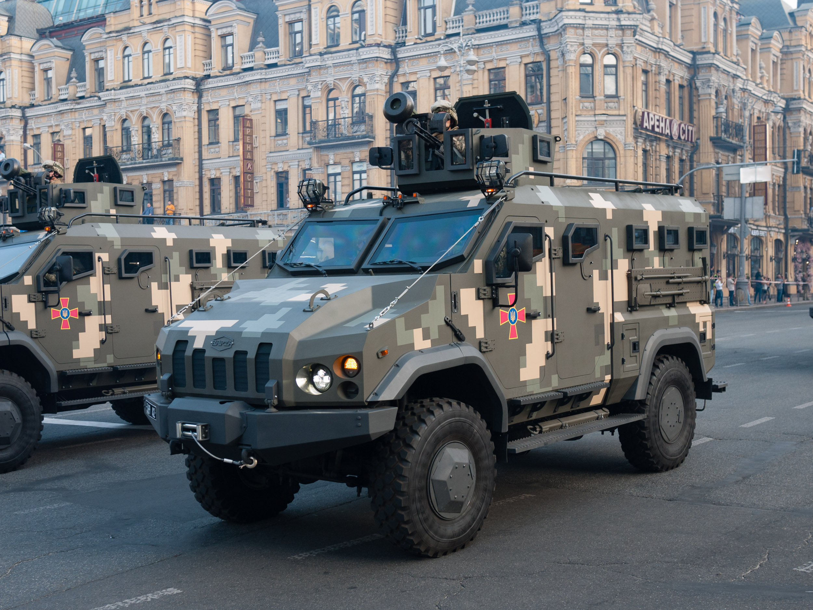
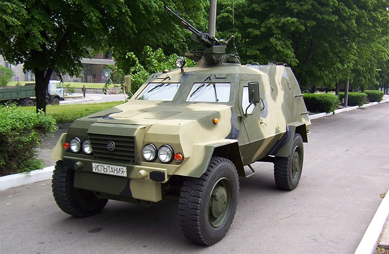
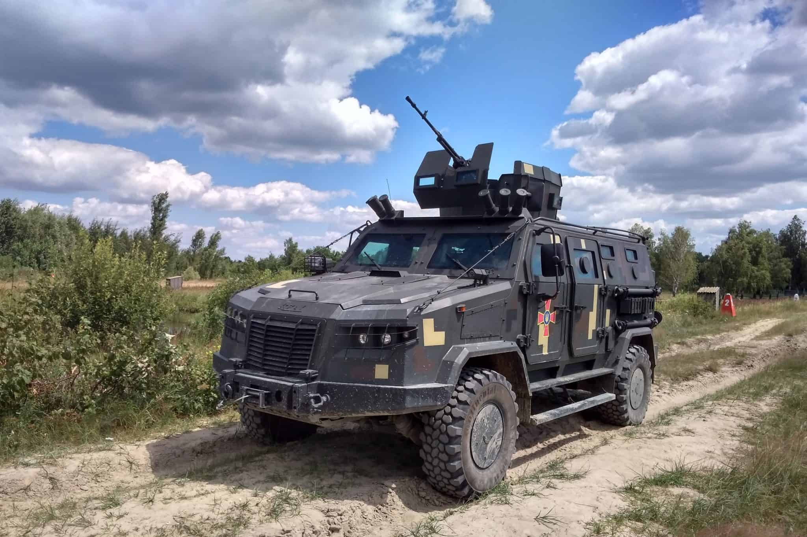
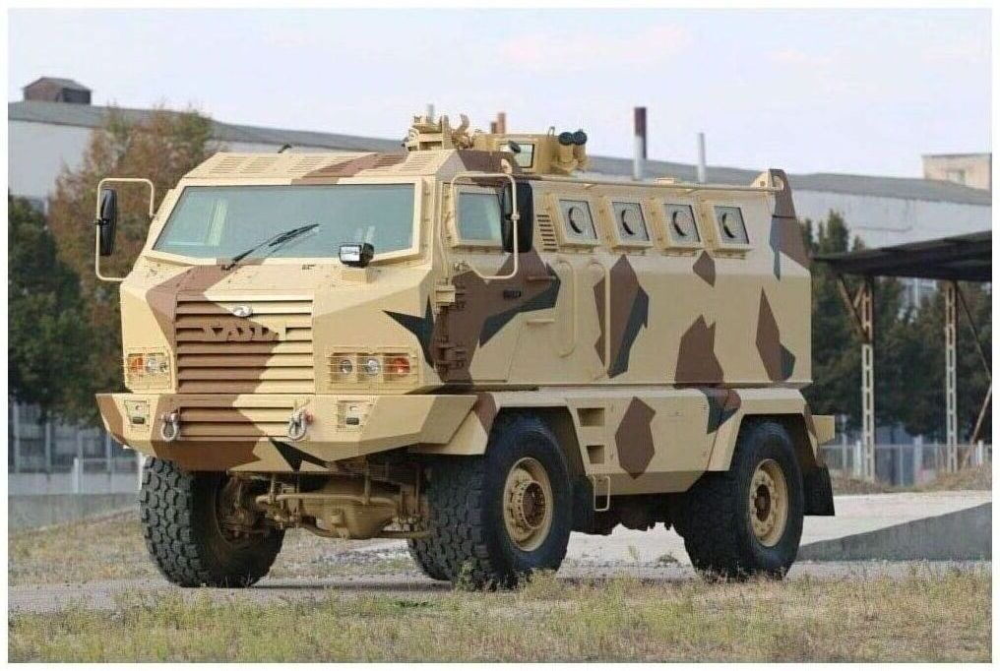
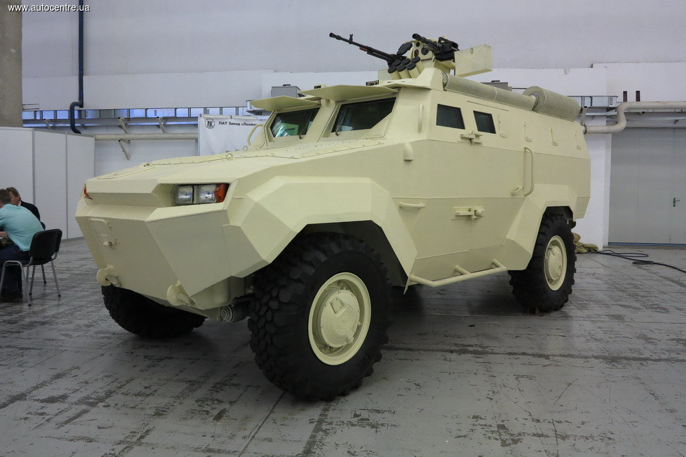

Бронеавтомобілі України

«Варта»
Бронеавтомобіль з колісною формулою 4×4. Цю машину розроблено ТОВ «Українська бронетехніка» на шасі
МАЗ-5434. Автомобіль вперше «засвітили» керівництву МВС наприкінці 2015 року, проте потім машину
допрацювали. У результаті партію бронеавтомобілів «Варта» було замовлено для спецпідрозділу «КОРД».
«Варта» має бронекорпус зі шведської сталі 560 Steel і отримала клас захисту STANAG 4569 рівень 2. Крім
того, машина належить до класу MRAP, а тому ефективно захищена від мін: тут застосовано V-подібне днище,
якому не страшний підрив 6 кг тротилу. Повна маса – 17 500 кг. «Варта» призначена для перевезення до 10
людей десанту. Двигун – турбодизель, 270 або 330 к.с.
Для бронювання використана шведська сталь з твердістю 560, що дозволяє без зниження бронестійкості
зменшити вагу капсули автомобіля на 11 %, як наслідок збільшилася корисна вантажопідйомність. Броня
захищає екіпаж і десант від бронебійного набою калібру 7,62×39 мм. Також уперше в Україні спільно з
вітчизняним виробником бронескла використаний сучасний зовнішній метод встановлення бронескла на бойовій
броньованій машині такого класу, що дає можливість проводити швидкий демонтаж і заміну бронескла при
його пошкодженні, а також збільшена міцність рамки, на яку монтується бронескло.
Також «Варта» позбавлена найбільш поширеного слабкого місця бронемашин вітчизняного
виробництва: замки
бронедверей яких не витримують щоденної експлуатації. На бронеавтомобіль «Варта» були встановлені ручки
та замки виробника TriMark, які витримують щоденне використання дверей вагою до 500 кг.

«Дозор-Б»
Повнопривідна бойова броньована машина з колісною формулою 4х4. Створений в Україні Харківським
конструкторським бюро машинобудування ім. О.О.Морозова як багатоцільовий захищений транспортний засіб
для транспортування особового складу, зброї, та військового обладнання вагою до 2 тонн.
«Дозор-Б» перевозить до 10 осіб і ефективно захищає бронебійних куль калібру 7,62 мм. Машина може
комплектуватися різними бойовими модулями, зокрема з кулеметом НСВТ-12,7. Бронетранспортер оснащений
турбодизелем Deutz потужністю 190 к.с. і автоматичною коробкою передач Allison.
Призначений для використання в підрозділах сухопутних військ, військової поліції, в штабах,
розвідувальних та тилових підрозділах. В залежності від призначення, передбачені різні варіанти
виконання бронеавтомобіля у виробництві: бронетранспортер, санітарна, командно-штабна,
розвідувально-дозорна, та інші спеціальні машини.
Броньовий корпус бронеавтомобіля «Дозор-Б» забезпечує захист екіпажу, десанту і
внутрішнього обладнання
від стрілецької зброї, протипіхотних мін та впливу зброї масового ураження. Деформуюче фарбування
забезпечує зниження помітності і дальності виявлення. Корпус зварений з листів броньової сталі. Броньове
скління бронеавтомобіля забезпечує захист, аналогічний основному броньовому захисту. Днище
бронеавтомобіля виконано з броньової сталі, має циліндричну форму для забезпечення захисту від мін. Для
захисту від куль крупнішого калібру і більш потужних засобів ураження передбачені навісні елементи
захисту.

«Козак-2М»
Тактичний бронеавтомобіль для невеликих бойових груп повною масою у 12 тонн. Козак-2М1 є
повноцінним броньовиком, призначеним для виконання широкого кола бойових завдань, і має класифікацію
Міністерства оборони як «броньована бойова колісна машина», на відміну від багатьох інших
бронеавтомобілів України, які класифікувалися як «спеціалізований броньований автомобіль». За оцінкою
Міністерства оборони, «Козак-2М1» — це «компактний БТР».
«Козак-2М1» має несучий корпус-монокок, без рами, на якому встановлена повністю незалежна
підвіска. За словами виробника, незалежна підвіска і корпус-монокок дали такі переваги у порівнянні з
виготовленням автомобіля на посилених рамних шасі: підвищена прохідність, вища плавність ходу по
бездоріжжю на високих швидкостях, знижена загальна висота автомобіля.
Характерною особливістю цього бронеавтомобіля є незалежна підвіска всіх коліс. Крім того,
на машині
з’явилася централізована система підкачки коліс (у попередника «Козак-2» вона відсутня). Машина повною
масою 12 тонн перевозить до 9 осіб та оснащена 280-сильним турбодизелем IVECO.

KrAZ Hulk
Вперше представлений ПАТ «АвтоКрАЗ» на виставці «Зброя та безпека 2016».
Бронемашина має безкапотне компонування з переднім розташуванням двигуна і відділення управління. В
середній і кормовій частині машини розміщено десантне відділення. Екіпаж машини складається з двох
осіб, передбачена можливість перевезення кількох піхотинців. Сидіння десанту складані, що дозволяє
використовувати десантне відділення як вантажний відсік.
До особливостей слід віднести тримальний бронекорпус, без рами, що дало можливість зменшити масу до 14 т.
(мінус 2 тонни). Hulk належить до класу MRAP і має V-подібне днище для захисту від мін. За балістичним
захистом автомобіль відповідає STANAG 4569 рівень 2.
Корпус бронемашини зварений, виготовлений із сталевих броньових листів. Скло багатошарове,
куленепробивне.
У верхній частині бортів десантного відділення розташовані амбразури для ведення вогню зі
стрілецької
зброї (по чотири з кожної сторони). У кормі корпусу розташовані двері для посадки і висадки десанту, в
стулці якої є амбразура для ведення стрільби. У даху десантного відсіку є люк.

«Тритон»
Бойова броньована машина-амфібія з колісною формулою 4×4 розроблена ПАТ «Кузня на Рибальському», може
бути використаний як бронетранспортер або як багатоцільова броньована база для машин різного
призначення.
Машина призначена для сил спеціальних військових операцій Збройних сил України. Автомобіль комплектується
6-циліндровим двигуном Volvo TAD620VE об'ємом 5,7 л і потужністю 211 к.с., що працює з автоматичною
5-ступінчастою коробкою передач Allison 1000SP і має двоступеневу роздавальну коробку передач, з
блокуванням міжосьового диференціала. Підвіска коліс — незалежна, важільно-торсійна. Застосовано
безкамерні шини Michelin XZL MPTTL 365/80 R20.
Для спостереження та прицілювання застосовується кольорова CCD камера з подвійним полем зору,
неохолоджувана тепловізійна камера, лазерний далекомір, а також кольоровий 12-дюймовий РК дисплей.
Корпус машини зроблений із сталевої катаної гомогенної броні, що забезпечує протикульний та
протиосколковий захист рівня STANAG 4569 Level 2. Лобова 12-14 мм та скло витримують попадання кулі
12,7-мм. Бокова/верхня 6,5 мм витримує попадання кулі 7,62 мм.